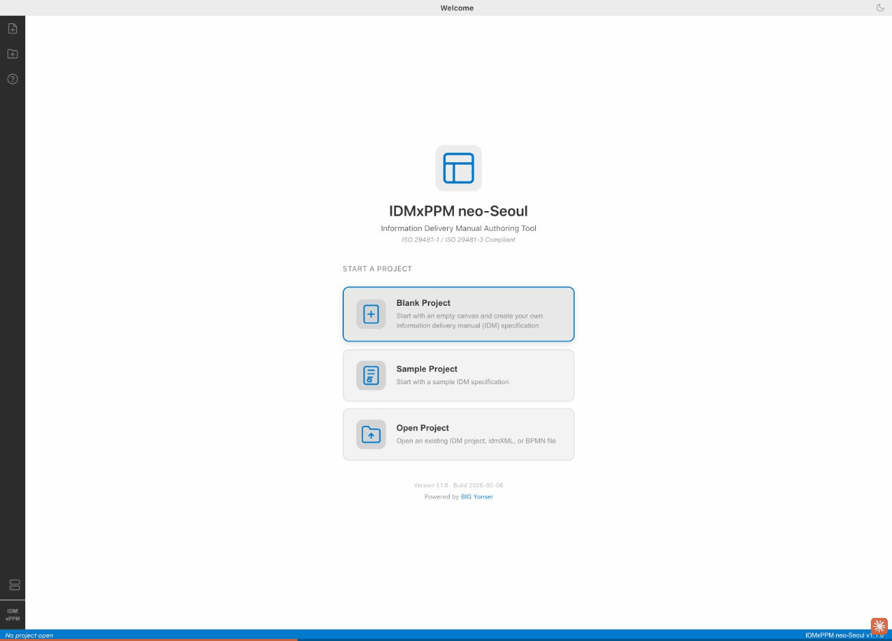
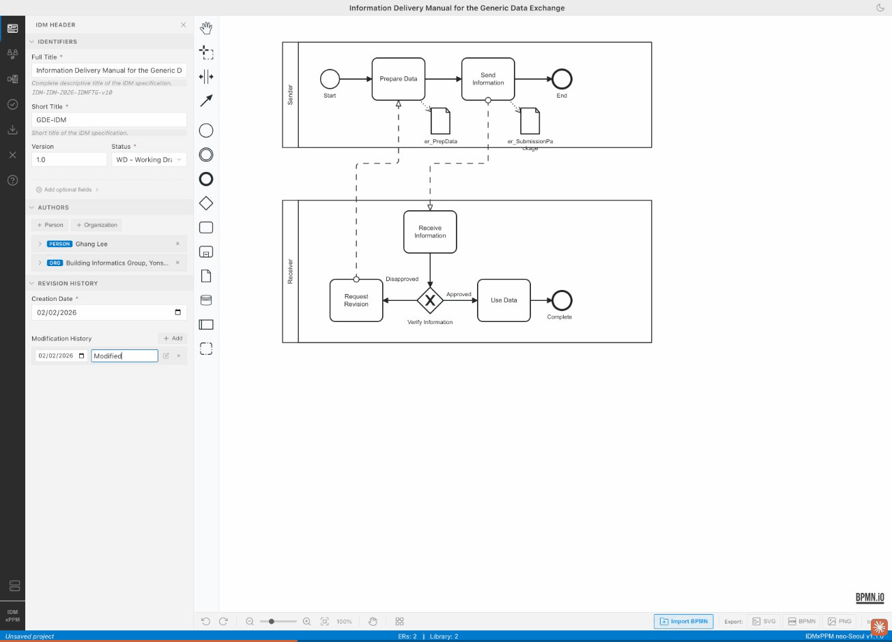
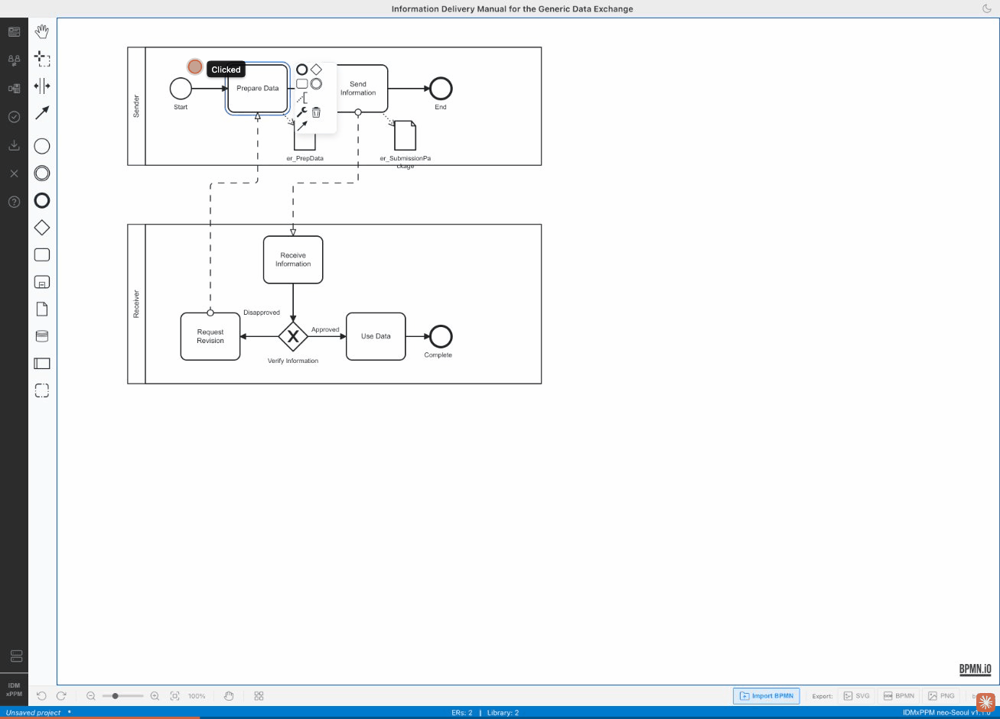
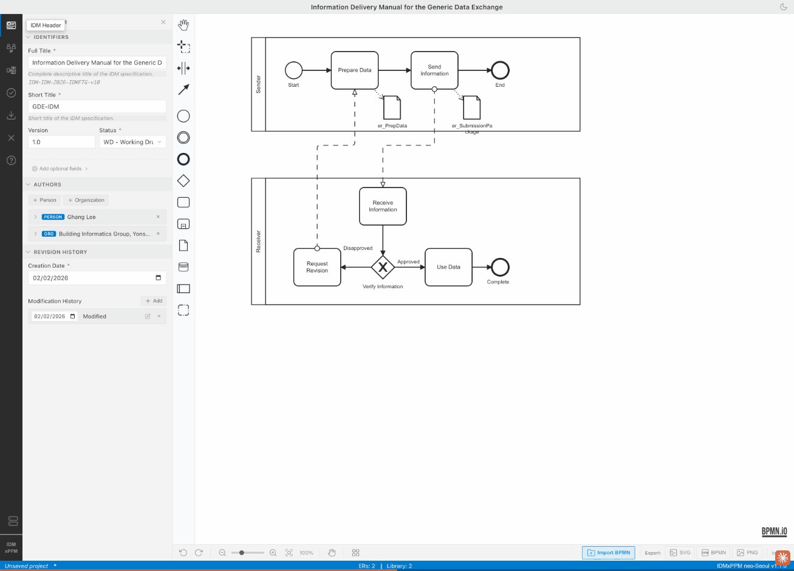
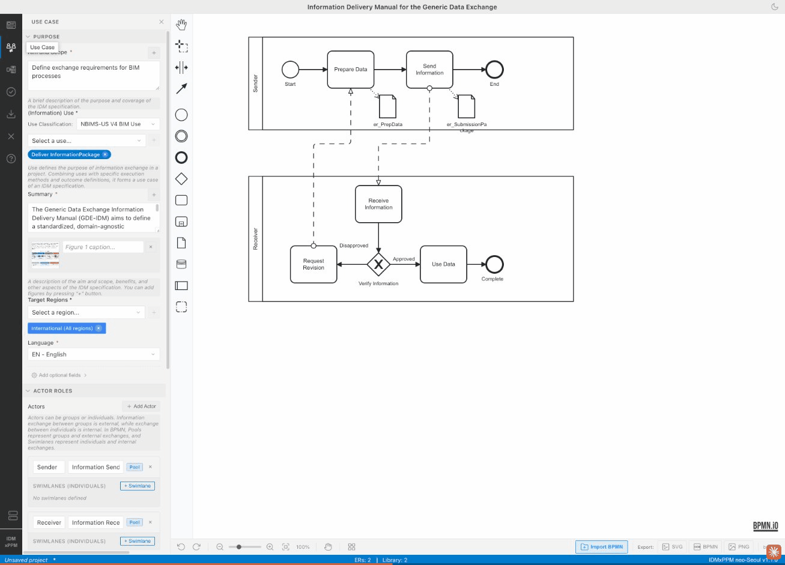
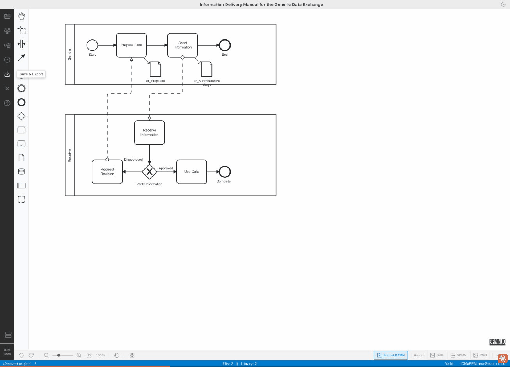

IDMxPPM neo-Seoul is a desktop application for authoring Information Delivery Manuals (IDMs)
compliant with ISO 29481-1 and ISO 29481-3. Built for the AEC industry, it provides an integrated
environment to model use cases, define exchange requirements, create BPMN 2.0 process diagrams,
and export machine-readable IDM specifications.

The startup screen presents three pathways into the application
When you launch the application, the startup screen offers three options:
Startup Options
1
Blank Project — Start a brand-new IDM specification from scratch with an empty BPMN canvas and default metadata.
2
Sample Project — Open a pre-built example IDM ("Generic Data Exchange") to explore the application's features with realistic data already populated.
3
Open File — Load an existing .idm project file from your computer to continue editing a previously saved specification.
⚡
New users should start with the Sample Project to familiarize themselves with all features before creating their own IDM specifications.
Get up and running in seconds. This tutorial walks you through opening the sample project
and arriving at the main BPMN editor workspace.

From startup to the BPMN editor in one click
Steps
1
On the startup screen, click Sample Project.
2
The IDM Header panel opens automatically on the left, showing the specification title: "Information Delivery Manual for the Generic Data Exchange."
3
Close the header panel by clicking the × button (or clicking the Header icon again) to reveal the full BPMN canvas.
You are now in the main workspace. The BPMN diagram shows two swim lanes (Sender and Receiver) with tasks,
gateways, and data objects representing a complete exchange process.
📝
The title bar displays the current specification name. The status bar at the bottom shows the number of Exchange Requirements (ERs), Library items, and the validation state.
The vertical sidebar on the far left contains all the major function panels.
Each icon toggles a dedicated panel that slides open alongside the BPMN canvas.

Sidebar panels: IDM Header, Use Case, and Exchange Requirements
Sidebar Icons (Top to Bottom)
📄
IDM Header — Specification metadata: title, version, status, language, authors, and revision history.
👥
Use Case — Actors, classification, purpose, actor roles, and target project phase selections (ISO 22263, AIA B101, RIBA).
📋
Exchange Requirements — Hierarchical view of all ERs and their Information Units, with add/delete/reorder controls.
✅
Validate — Run ISO 29481-3 compliance checks against the current specification.
💾
Save & Export — Export to IDM, idmXML, HTML, ZIP, or BPMN formats.
⚡
Click any sidebar icon a second time to close its panel and reclaim canvas space. Only one panel can be open at a time.
The BPMN editor is the heart of IDMxPPM. It provides a full BPMN 2.0 process diagram canvas where
you model the information exchange workflow between Sender and Receiver participants.

Click BPMN elements to access context actions and assign Exchange Requirements
Key Interactions
1
Add elements from the vertical palette on the left: tasks, events, gateways, data objects, and sequence flows.
2
Click a task (e.g., "Prepare Data") to see the context action menu — you can rename, delete, or attach properties.
3
Click a data object (e.g., "er_PrepData") to open the Assign Exchange Requirement dialog, which lets you link the data object to a specific ER.
4
Use drag-and-drop to reposition elements. Connect them with sequence flows by dragging from one element's edge to another.
The BPMN canvas supports standard BPMN 2.0 elements: start/end events, tasks, exclusive/parallel gateways,
message flows, data objects, and swim lane pools. The toolbar beneath the canvas provides zoom, undo/redo,
and a minimap toggle.
📝
Data objects are the bridge between the BPMN process map and Exchange Requirements. Each data object should be assigned to an ER to create a complete IDM specification.
The IDM Header panel captures all the metadata for your specification. This information
appears in exported documents and identifies the IDM uniquely.

Header metadata: title, version, status, language, authors, and revision history
Header Fields
1
IDM Title — The full name of your Information Delivery Manual specification (displayed in the title bar).
2
Version & Status — Track the specification version (e.g., "1.0") and its current status (Draft, Review, Published, Deprecated).
3
Language — Set the specification language (e.g., "EN - English") for multi-language IDM support.
4
Authors — Add one or more authors with name, organization, and role fields. Scroll down to access the full author list.
5
Revision History — Maintain a chronological log of changes with date, author, and description for each revision.
⚡
The header metadata is included in all export formats (idmXML, HTML, ZIP) and is required for ISO 29481-3 compliance.
The Use Case panel defines the context and purpose of the information exchange.
It captures who is involved, what the exchange achieves, and which project phases it applies to.

Use Case: classification, actor roles (Sender/Receiver), and project phase mapping
Use Case Fields
1
Region & Language — Select the target region and language for the use case. Choose "International" for region-agnostic specifications.
2
Optional fields — Expand to add Purpose, Summary, Classification, Aim & Scope, Benefits, Limitations, Preconditions, and Postconditions.
3
Actor Roles — Define the Sender and Receiver pools. Each pool represents a participant group and can have individual swimlanes.
4
Target Project Phases — Check the applicable project stages. The panel supports three classification systems:
ISO 22263
AIA B101 (US)
RIBA Plan of Work (UK)
ISO 22263 project stages (Inception, Brief, Design, Production, Handover, Operation, End of Life)
are mandatory per the IDM specification. AIA B101 and RIBA stages are optional complementary classifications
to help localize the IDM for US or UK practice.
📝
You can also define Custom Project Phase Classifications at the bottom of the panel for project-specific lifecycle frameworks.
Exchange Requirements (ERs) are the core of the IDM specification. They define what information
needs to be exchanged, broken down into hierarchical Information Units with data types, optionality, and external schema mappings.

ER hierarchy with er_PrepData expanded to show Information Units
Working with ERs
1
Hierarchy View — The left panel shows the ER tree. The root node contains sub-ERs (e.g., "er_PrepData", "er_SubmissionPackage") with information unit counts.
2
Toolbar — Use the toolbar at the top of the hierarchy to add (+), delete, reorder, expand, or collapse ERs.
3
Individual ER View — Click any ER to open its detail panel on the right, showing the ER name, description, and a table of Information Units.
4
Information Units — Each unit has a name, data type (e.g., "3D Model", "Structured list"), description, and a required/optional toggle.
5
Edit Mode — The bottom panel provides an inline editor for the selected ER, with fields for name, description, and an "Apply and Close" button.
⚡
ERs can be nested to create complex hierarchies. For example, "er_SubmissionPackage" can contain sub-ERs for different parts of a submission, each with their own Information Units.
Before exporting, validate your IDM specification against ISO 29481-3 requirements.
The validation engine checks for completeness, consistency, and compliance automatically.
Validation Results: 0 errors, 0 warnings — ready for export
Steps
1
Click the Validate button (checkmark icon) in the left sidebar.
2
The Validation Results dialog appears, showing the count of Errors, Warnings, and Total issues.
3
If all checks pass, you will see a green checkmark with "All validation checks passed!" and the message "Your IDM specification is ready for export."
The validation engine performs an ISO 29481-3 Compliance Check that verifies:
BPMN structure
ER completeness
Data object linkages
Required metadata
Information Unit integrity
📝
If errors are found, each issue is listed with a description and a link to the offending element. Fix the issues and re-validate until all checks pass. The status bar also shows "Valid" when the specification is compliant.
IDMxPPM supports six export formats to suit different downstream workflows — from
full project files to ISO-compliant XML and self-contained HTML documents.

Choose from 6 export formats, each suited to a different workflow
Steps
1
Click the Save & Export button (download icon) in the left sidebar.
2
Enter a File name (defaults to the specification identifier, e.g., "GDE-IDM").
3
Select an export format from the list (see table below).
4
Click Export to generate and download the file.
⚡
Quick-export buttons are also available in the bottom status bar: Export: SVG | BPMN | PNG for rapid diagram-only exports without opening the full dialog.